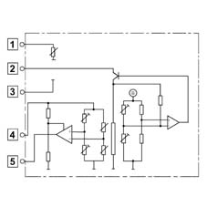
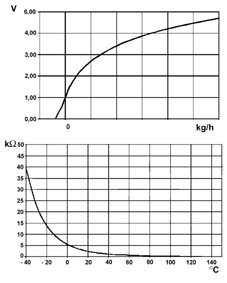
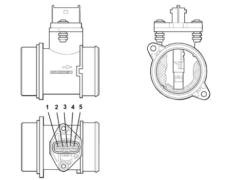

1060GB Check on operation of air flow meter
- Path
- Test > 10 ENGINE > 1060 DIESEL FUEL INJECTION > 1060G pressure pump electric control > 1060GB Check on operation of air flow meter
- Kind
- test / check procedure
- Applies to
- engines: 1.3 JTD; all production periods
- Interactive page
- https://sloeber94.github.io/elrnDB-lYpsln/en/#/2429792
Applies to: engines: 1.3 JTD; all production periods
Check that the air flow meter technical specifications correspond to the data given below:

Applies to: engines: 1.3 JTD; all production periods
Flow meter sensitive element principle diagram

Applies to: engines: 1.3 JTD; all production periods
typical curves [Air flow arte - Output voltage] and [Temperature - Resistance]

Applies to: engines: 1.3 JTD; all production periods
Pin 1 Description: temperature sensor Signal type: analogue output
Pin 2 Description: supply Signal type: 12V supply
Pin 3 Description: earth Signal type: earth
Pin 4 Description, reference voltage Signal type: 5V
Pin 5 Description: sensor output Signal type: analogue output.